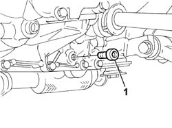
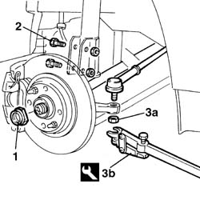
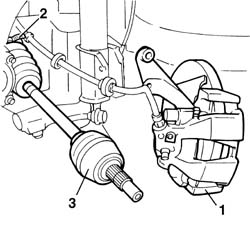
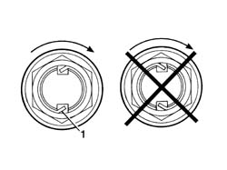
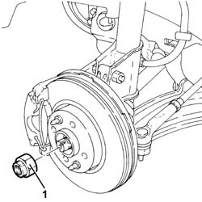
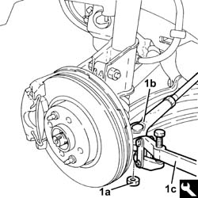
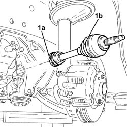
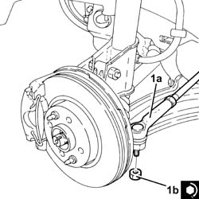
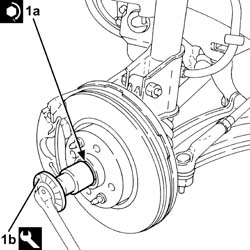
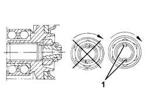

2710A40 l/h or r/h drive shaft (one) - r + r
- Path
- Procedures > 27 AXLE > 2710 FRONT AXLE > 2710A drive shafts and joints > 2710A40 l/h or r/h drive shaft (one) - r + r
- Kind
- repair procedure (removal / refitting; the operation number is the code)
- Applies to
- all engines; all production periods
- Interactive page
- https://sloeber94.github.io/elrnDB-fDbl/en/#/2584612
Applies to: all engines; all production periods
 Removing
Removing
 Refitting
RefittingPlace the car on a ramp.
Op. 4450B02 LEFT FRONT WHEEL - R.R.
Raise the lift.
Op. 7055B54 PROTECTION/GUARD UNDER ENGINE - R.R.
Place a suitable bowl under the car to collect the gearbox oil.
1. Undo the plug on the gearbox and drain the gearbox oil.

Applies to: all engines; all production periods
1. Using a hammer and suitable chisel, relieve the staking on ad then undo the wheel hub nut.
2. Undo the bolts securing the shock absorber strut.
3. Undo the fixing nut (3a) and using the tool (3b), remove the steering balljoint head from the vertical link.
 | Name | Country |
|---|---|---|
3b | Head extractor | 1.847.035.000 |

Applies to: all engines; all production periods
1. Tilt the brake disc/wheel hub assembly downwards.
Disengage and withdraw the drive shaft from the hub.
2. Open the clip securing the drive shaft to the differential.
3. Remove the drive shaft complete with constant velocity joint and tripod joint.

Applies to: all engines; all production periods
Refitting
RemovingCheck the drive shaft for damage.
Check that the gaiters are not damaged and that they contain lubricating grease.
Engage the tripod joint on the differential.
Lock the drive shaft on the flange using a new clip.
Engage the constant velocity joint on the wheel hub.
Refit the brake disc/wheel hub assembly in its seating.
Tighten the bolts securing the shock absorber strut to the specified torque.
 | Fastening | Component | Ø | Value (daNm) |
|---|---|---|---|---|
- | Nut | FRONT DAMPER | M10 x 1.25 | (Steering knuckle side) 12 |
Fit the steering tie-rod end in its seating.
Tighten the nut to the specified torque.
| Fastening | Component | Ø | Value (daNm) |
|---|---|---|---|---|
- | Nut | FRONT SUSPENSION LOWER LEVER BALL JOINT | M10 x 1.25 | 6 |
Tighten the wheel hub nut to torque.
| Fastening | Component | Ø | Value (daNm) |
|---|---|---|---|---|
- | Nut | FRONT HUB WITH BEARINGS | M22 | 7 + 55° |
1. Stake the nut in accordance with the illustration below.

Applies to: all engines; all production periods
Replace the oil drain plug seal.
Screw on the gearbox oil plug and tighten it to the specified torque.
| Fastening | Component | Ø | Value (daNm) |
|---|---|---|---|---|
- | Plug | GEAR CASING PADS | M22 x 1.5 | 3.6 |
Insert oil into the gearbox.
 | Type | Component | Name | Qty. |
|---|---|---|---|---|
- | Oil | GEARBOX OIL | TUTELA CAR ZC 75 Synth | - |
Check the oil level.
Op. 4450B02 LEFT FRONT WHEEL - R.R.
Op. 7055B54 PROTECTION/GUARD UNDER ENGINE - R.R.
Remove the vehicle from the ramp.
Applies to: all engines; all production periods
Applies to: engines: 1.9 JTD 8V; all production periods
Removing
RefittingPosition the vehicle on the ramp.
Proceed with the removal
Op. 7055B54 PROTECTION/GUARD UNDER ENGINE - R.R..
Proceed with the removal
Op. 4450B02 LEFT FRONT WHEEL - R.R..
1. Remove the bevel and undo the nut fixing the driveshaft to the wheel hub.

Applies to: engines: 1.9 JTD 8V; all production periods
1. Undo the nut (1a) and disconnect the steering rod (1b) from the steering knuckle using the tool (1c).
| Name | Country |
|---|---|---|
1c | Head extractor | 1.847.035.000 |

Applies to: engines: 1.9 JTD 8V; all production periods
Release the driveshaft from the wheel hub.
1. Loosen the band (1a), then remove the driveshaft complete with joints (1b).

Applies to: engines: 1.9 JTD 8V; all production periods
Refitting
RemovingRefit the drive shaft complete with couplings in its seating.
Tighten the band.
1. Connect the steering link (1a) to the front steering knuckle and tighten the nut (1b) to the recommended torque.
| Fastening | Component | Ø | Value (daNm) |
|---|---|---|---|---|
1b | Nut | POWER STEERNG BOX LINKS | M10 | (Wheel damper side) 4.5 ÷ 5.5 |

Applies to: engines: 1.9 JTD 8V; all production periods
1. Tighten the nut (1a) securing the front wheel hub to the drive shaft to the recommended torque, using the angle tightening tool (1b).
| Fastening | Component | Ø | Value (daNm) |
|---|---|---|---|---|
1a | Nut | DRIVESHAFT | M22 | (Wheel hub side) 7.0 + 55° |
| Name | Country |
|---|---|---|
1b | Protractor | 1.860.942.000 |

Applies to: engines: 1.9 JTD 8V; all production periods
1. Bevel the collar of the nut in two places as shown in the figure.

Applies to: engines: 1.9 JTD 8V; all production periods
Proceed with the refitting
Op. 4450B02 LEFT FRONT WHEEL - R.R..
Proceed with the refitting
Op. 7055B54 PROTECTION/GUARD UNDER ENGINE - R.R..
Remove the car from the ramp.